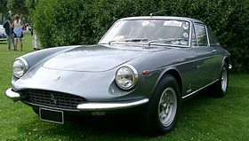
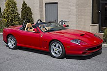
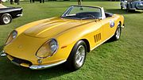
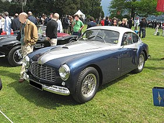
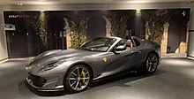

Models
Ferrari 365 GTC
The 330 GTC and GTS were replaced in 1968 by the 365 GTC and GTS. It was essentially a re-engine of the 330 GTC/GTS, with the engine increasing from 4.0 liters and 300 horsepower to 4.4 liters and 320 horsepower.[6] The styling remained almost unchanged: on both body styles differences were limited to vents moved from behind the front wheels to the bonnet.
Ferrari 599

The Ferrari 599 GTB Fiorano (internal code F141) is a grand tourer produced by Italian automobile manufacturer Ferrari. It was the brand's front engined, two-seat model that replaced the 575M Maranello in 2006 as a 2007 model, and was replaced for the 2013 model year by the F12berlinetta. Styled by Pininfarina under the direction of Jason Castriota, the 599 GTB debuted at the Geneva Motor Show in February 2006. The bodywork features optimized aerodynamics with distinct sail panels flanking the rear window, directing and maximizing air flow to a linear rear nolder.
2001 Ferrari 550 Barchetta Pininfarina
The Ferrari 550 Maranello (tipo F133) is a front-engine V12 2-seat grand tourer built by Ferrari from 1996 to 2001. The 550 Maranello marked Ferrari's return to a front-engine, rear-wheel drive layout for its 2-seater 12-cylinder model, 23 years after the 365 GTB/4 Daytona had been replaced by the mid-engined Berlinetta Boxer. In 2000, Ferrari introduced the 550 Barchetta Pininfarina, a limited production roadster version of the 550, limited to just 448 examples. The 550 was replaced by the upgraded 575M Maranello in 2002.
1967 275 GTB/4S NART Spider
The 275 GTB/4S NART Spider was a roadgoing 2-seater spider version of the 275 GTB/4, 10 of which were built in 1967. Production of this car was initiated by Ferrari's North American dealer, Luigi Chinetti, who wanted a successor to the earlier 250 California Spider series.[3] He asked Sergio Scaglietti and Enzo Ferrari to build a spider version of the 275 GTB/4, which Chinetti bought for approximately $8,000 each,[citation needed] and listed at $14,400 retail.[6] These cars were informally named NART Spiders, referring to Chinetti's North American Racing Team. While the name "NART" was never part of this model's official designation from the factory, a cloisonné badge with the team's logo was installed on the rear of each car.
Ferrari 166 Inter Stabilimenti Farina Coupé
The Ferrari 166 Inter was Ferrari's first true grand tourer. An evolution of the 125 S and 166 S racing cars, it was a sports car for the street with coachbuilt bodies. The Inter name commemorated the victories claimed in 166 S models by Scuderia Inter. 38 166 Inters were built from 1948 through 1950.[1] Note that both the 166 S and 166 F2 were also called "166 Inter" in the days that they were actively raced by the Scuderia of the same name.
812 GTS
Unveiled in September 2019, the Ferrari 812 GTS is the open top version of the 812 Superfast. This marks the first front-engine V12 series production convertible model offered by Ferrari in 50 years,[13] as the convertible variants of the 550, the 575 and the 599 were limited edition models meant for special customers only.
F1
Scuderia Ferrari S.p.A. (Italian: [skudeˈriːa ferˈraːri]) is the racing division of luxury Italian auto manufacturer Ferrari and the racing team that competes in Formula One racing. The team is also nicknamed "The Prancing Horse", in reference to their logo. It is the oldest surviving and most successful Formula One team, having competed in every world championship since the 1950 Formula One season.[7] The team was founded by Enzo Ferrari, initially to race cars produced by Alfa Romeo, though by 1947 Ferrari had begun building its own cars. Among its important achievements outside Formula One are winning the World Sportscar Championship, 24 Hours of Le Mans, 24 Hours of Spa, 24 Hours of Daytona, 12 Hours of Sebring, Bathurst 12 Hour, races for Grand tourer cars and racing on road courses of the Targa Florio, the Mille Miglia and the Carrera Panamericana. The team is also known for its passionate support base, known as the tifosi. The Italian Grand Prix at Monza is regarded as the team's home race. As a constructor in Formula One, Ferrari has a record 16 Constructors' Championships, the last of which was won in 2008. Alberto Ascari, Juan Manuel Fangio, Mike Hawthorn, Phil Hill, John Surtees, Niki Lauda, Jody Scheckter, Michael Schumacher and Kimi Räikkönen have won a record 15 Drivers' Championships for the team.[8] Since Räikkönen's title in 2007 the team narrowly lost out on the 2008 drivers' title with Felipe Massa and the 2010 and 2012 drivers' titles with Fernando Alonso. The 2020 Tuscan Grand Prix marked Ferrari's 1000th Grand Prix in Formula One. Michael Schumacher is the team's most successful driver. Joining the team in 1996 and departing in 2006, he won five consecutive drivers' titles and 72 Grands Prix for the team. His titles came consecutively between 2000 and 2004, and the team won consecutive constructors' titles between 1999 and 2004; this was the team's most successful period. The team's 2022 drivers are Charles Leclerc and Carlos Sainz Jr.
History
Ferrari S.p.A. (/fəˈrɑːri/; Italian: [ferˈraːri]) is an Italian luxury sports car manufacturer based in Maranello, Italy. Founded by Enzo Ferrari in 1939 from the Alfa Romeo racing division as Auto Avio Costruzioni, the company built its first car in 1940, and produced its first Ferrari-badged car in 1947. Fiat S.p.A. acquired 50% of Ferrari in 1969 and expanded its stake to 90% in 1988.[4] In October 2014, Fiat Chrysler Automobiles (FCA) announced its intentions to separate Ferrari S.p.A. from FCA; as of the announcement FCA owned 90% of Ferrari.[5][6][7] The separation began in October 2015 with a restructuring that established Ferrari N.V. (a company incorporated in the Netherlands) as the new holding company of the Ferrari S.p.A. group,[8] and the subsequent sale by FCA of 10% of the shares in an IPO and concurrent listing of common shares on the New York Stock Exchange.[9] Through the remaining steps of the separation, FCA's interest in Ferrari's business was distributed to shareholders of FCA, with 10% continuing to be owned by Piero Ferrari.[10] The spin-off was completed on the 3rd of January 2016.[9] Throughout its history, the company has been noted for its continued participation in racing, especially in Formula One, where it is the oldest and most successful racing team, holding the most constructors' championships (16) and having produced the highest number of drivers' championship wins (15).[11] Ferrari road cars are generally seen as a symbol of speed, luxury and wealth.[12] Ferrari cars are built at the 165,000 square-metre (16.5-hectare) Maranello factory.[13] In 2014 Ferrari was rated the world's most powerful brand by Brand Finance.[14] As of 2021, Ferrari is the 10th-largest car manufacturer by market capitalisation, with $52.21 billion.